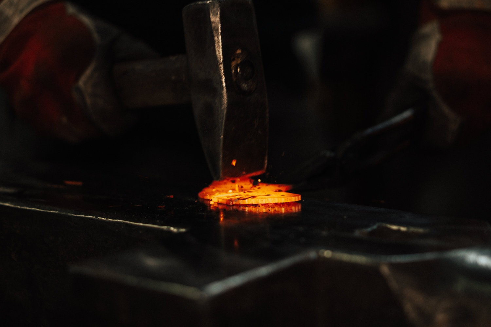
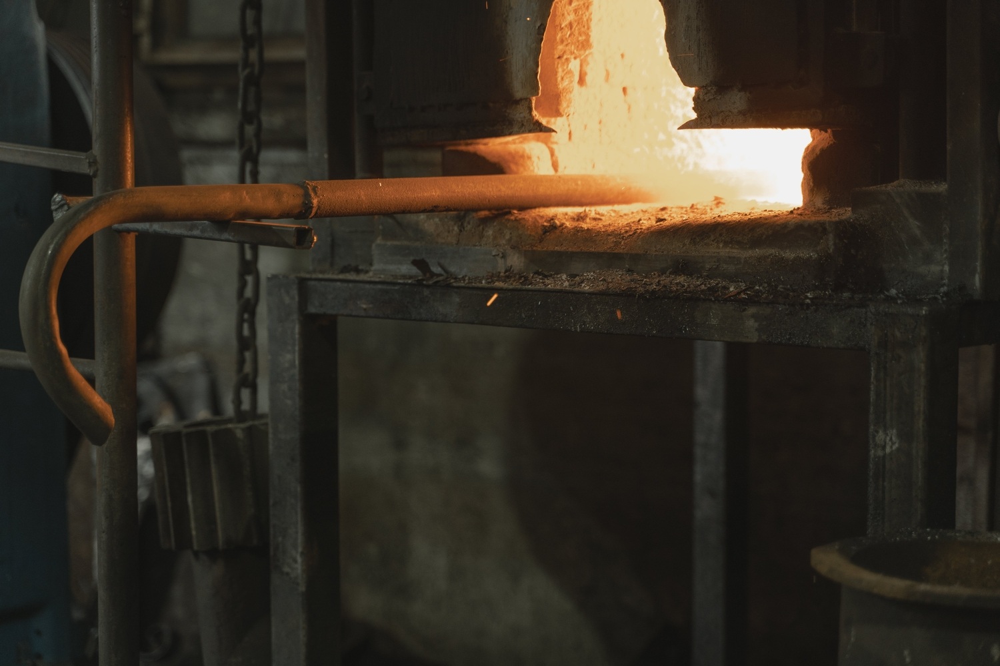

Many of the tools you will need are relatively simple. The two most basic are the hammer and anvil.
The anvil can be the most difficult thing to track down these days. The prices of well-made anvils has skyrocketed to anywhere between five to seven dollars a pound. Starting out we are looking for something around the 65 pound or more range if we can find it for a reasonable price. While we all may want to start out with a 200 pound anvil for most that isn't financially feasible, and you don't even know if you are going to enjoy doing this yet. The first affordable anvil I came across was the Central Forge 55lb cast iron anvil at Harbor Freight. This anvil is often called an anvil shaped object by the blacksmithing community at large due to its unsuitability for most forging. Since this anvil is not made of hardened steel it is going to be to soft to work with efficiently. I ended up returning this anvil and began looking for alternatives that would hold up better over time. Then it came to my attention that Harbor Freight had released a proper cast steel anvil that weighed in at 65lbs. While I checked out reviews about it I discovered that this Doyle anvil would be the perfect starter anvil for me that wouldn't have to cost an arm and a leg.
The hammer is going to be one of the easier things for you to go out and find. Most blacksmithing hammers will range in weight from 2 to 4 pounds an maybe a few that will be even heavier. The important thing to remember here is that starting with a heavier hammer will not necessarily get you the result that you are looking for. It is far more difficult to maintain control of a heavier hammer than a lighter one when we are just starting out. Trying to use a hammer that is to heavy will lead to you being worn out faster or possibly even injuring yourself or possibly even damage the anvil or the piece you are working on. It is far better start with a smaller hammer and learn to control it rather than start with a larger hammer and get frustrated.
The next set of items that you will want to consider is clothing and accessories. Clothing is important because while you may get burned at some point being able to minimize the damage done will be best. Stick to natural fibers such as cotton and leather. Synthetic fabrics will possibly melt and stick to you which could make a bad day that much worse. Leather is an ideal covering because it will provide essentially a second skin that won't usually burn you. A note of warning about gloves. If you choose to wear gloves while forging, never wear a glove on your hammer hand as the hammer could slip loose while you are swinging it. The other warning is that make sure the gloves come off your hands quickly and easily. The reason is that by the time the glove gets hot enough that you can feel it burning you don't want your hand to be stuck inside a tight leather glove that is quickly turning into an oven. A leather apron of some kind will serve you well and you will likely get many years of use out of one. Wearing a heavy leather boot will also help to keep hot metal from burning through other materials and reaching your feet.
The final piece of equipment that I will discuss is the forge itself. You might wonder why this is so far down this list. Part of that is because there are so many ways to go about either buying or building your own. The two most common fuel sources are going to be coal and propane. Depending on where you live coal might be reasonably easy to come by but just about everyone should have access to propane. I've chosen to use propane for ease of use. I did my research on coal and even applaud those that can use it consistently because it is not an easy skill to learn. Coal can burn much hotter than propane and thus have an increased potential to damage the steel that you are working on. Propane on the other hand burns plenty hot enough to forge weld if needed but usually not so hot as to start burning the carbon out of the steel. There are numerous forges available to purchase online and I chose a two-burner to get started with. While a single burner would have probably been fine to get started I knew that I would want a little more flexibility and have the extra length available.